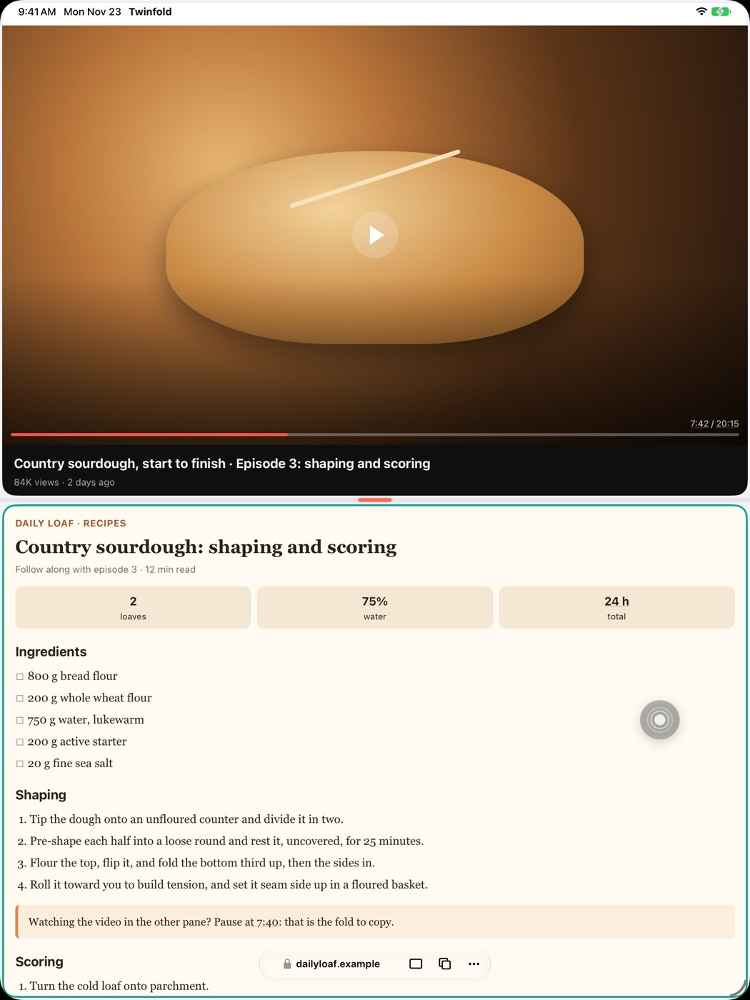
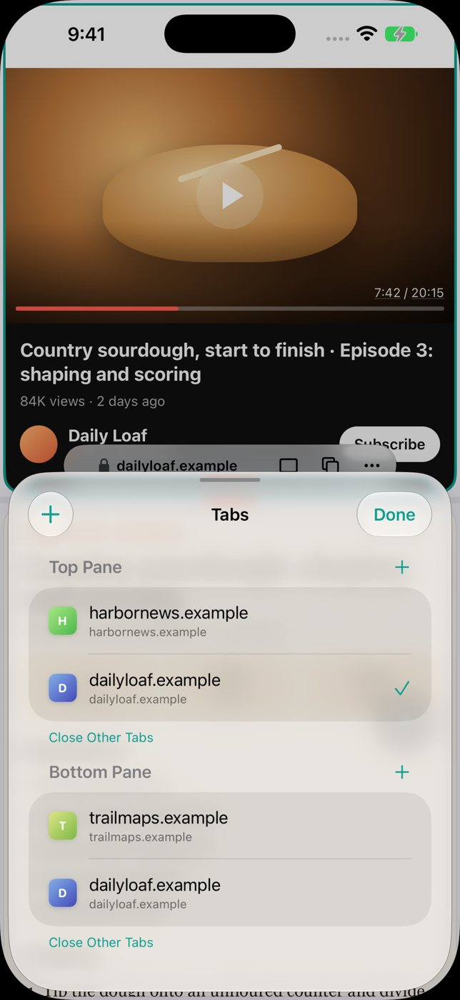
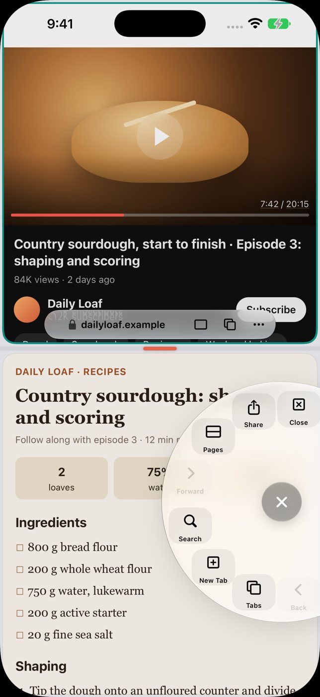
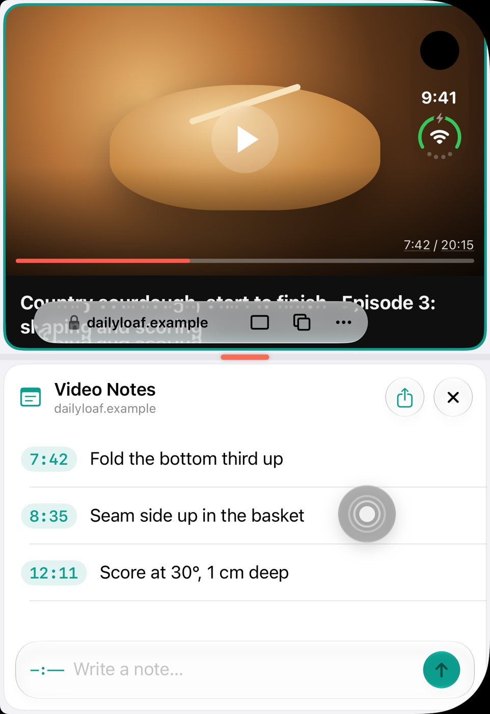

Duo fermé
Deux pages sur l'écran extérieur, jusqu'au bord.

Twinfold partage l'écran pour afficher deux pages web à la fois. Sur l'iPhone Duo, elles se rejoignent au pli et vont jusqu'aux bords, même sous la bande latérale.

Film
News
Tous les appareils
Deux pages sur l'écran extérieur, jusqu'au bord.
Une page au-dessus du pli, une en dessous.

Côte à côte, chacune sur sa moitié.

Deux pages côte à côte, et Split View avec n'importe quelle app.

La vidéo en haut, l'article en bas. Faites glisser la poignée.

Des vignettes plein écran, normaux et privés.

Balayez pour voir les autres appareils →
Fonctions
Appui long sur la poignée : moitié-moitié, un tiers, deux tiers, ou priorité vidéo, à la taille d'une vidéo 16:9. Inversez les pages sans arrêter la vidéo.
Enregistrez deux pages qui vont ensemble, avec leur taille : une vidéo et vos notes, un article et son résumé par l'IA. Ouvrez-les depuis l'icône de l'écran d'accueil.

Un bouton rond flotte au-dessus des pages. Touchez-le : vos actions s'ouvrent autour. Ou appuyez et glissez vers l'une d'elles, elle s'exécute quand vous relâchez. Placez-le où vous voulez, ou masquez-le.

Les onglets des deux pages dans une seule grille, normaux et privés. Et l'IA à côté de la page : ChatGPT, Claude, Gemini, Le Chat, Perplexity ou Copilot dans l'autre volet, déjà interrogés sur votre page.

Volets liés : touchez des liens d'un côté, lisez-les de l'autre. Lecture bilingue : une page et sa traduction qui défilent ensemble. Des notes vidéo qui gardent le moment.

Tarifs
Un seul achat, pas d'abonnement.
Non. Twinfold est gratuit, et Twinfold Pro est un achat unique, à vous pour toujours.
iPhone Duo, et tous les iPhone et iPad sous iOS 27 ou plus récent.
Oui. iOS laisse le son à l'une des deux : chaque volet a un bouton son pour choisir celle que vous entendez.
Sur iOS, une app ne peut pas tourner dans une autre, mais leurs versions web oui : YouTube, Maps, Gmail, Notion et d'autres sont sur la page d'accueil. Sur iPad, Twinfold marche aussi en Split View à côté de n'importe quelle app.
Le site de l'assistant s'ouvre dans l'autre volet, avec votre propre compte. Twinfold ne voit jamais vos conversations.
Rien. Ni compte, ni serveur, ni statistiques : votre historique et vos signets restent sur votre appareil.